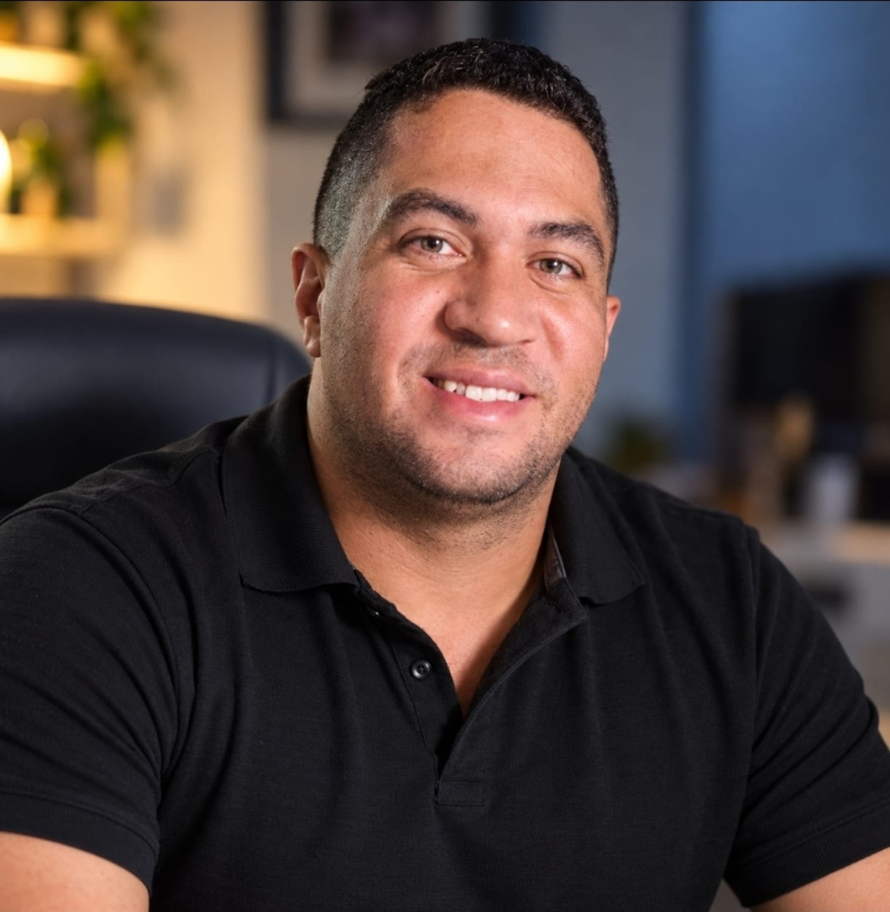

Landing pages
Páginas de apresentação de empresas com chamadas para ação e botões diretos para o WhatsApp.
Estudante de Engenharia de Software e desenvolvedor em formação. Crio landing pages e sites responsivos para ajudar negócios a apresentar seus serviços e conquistar clientes.

Sou estudante de Engenharia de Software, apaixonado por tecnologia, desenvolvimento e inteligência artificial. Estou construindo minha trajetória na programação, com foco em transformar aprendizado em projetos reais.
Também tenho experiência profissional em supervisão de segurança patrimonial, onde desenvolvi liderança, organização e resolução de problemas — habilidades que levo para a tecnologia.
🎓 Engenharia de Software
💻 Desenvolvimento web
🧠 Interesse em inteligência artificial
📍 Distrito Federal, Brasil
Soluções digitais objetivas, com atenção à experiência no celular.
Páginas de apresentação de empresas com chamadas para ação e botões diretos para o WhatsApp.
Sites que se adaptam a diferentes tamanhos de tela, do smartphone ao computador.
Projetos em desenvolvimento para organizar processos e facilitar rotinas de trabalho.
Solução de gestão de almoxarifado, uniformes e EPIs, com foco em organização, solicitações e controle de estoque.
Ver projeto ↗Este próprio site: uma landing page com navegação, layout responsivo e integração direta com o WhatsApp.
Meu GitHub ↗Quer uma landing page para apresentar sua empresa e facilitar o contato dos clientes? Vamos conversar sobre sua ideia.